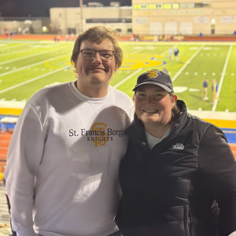

The (Brief) Story of SkylarMy name is Skylar Hight, and I was born on June 27th, 2005 in St. Louis Missouri. The hospital I was born was in St. John’s Mercy Hospital. When I was born, we lived in 9515 Bataan on Woodson Terrace Missouri, but later moved to my grandma’s house when my brother Bryton was born. Then we moved to St. Charles in an apartment complex. We then moved out due to neighbors and lease. We again moved in with my grandma, and had a house being rebuilt in Maryland Heights, Missouri. While we were getting our house rebuilt, we were hearing stories about how the house was haunted. Nonetheless, we moved in. Not long after, Bryton was talking to his “friends” in the darkest areas of the house, while I would dream about the people with black eyes. So we left, and moved back in with my grandma, so my dad could go back to school. In that house, I was introduced to the greatest thing on planet Earth… VIDEO GAMES!!! We would play Call of Duty: Black Ops 2, and watch him play it. This was back on the PS3. What I know now that I didn’t know before, was that the person that did one of the inspections was writing a coffee table book about the most haunted houses in St. Louis. The inspector and my dad had a conversation about how the house we were rebuilding was one of the stories in her book. I was gaining friends and would always be running around the neighborhood. So, we left again to a small rural town named St. Clair in Missouri. This ended up being for the better. Had I stayed in St. Louis I would have probably grown up to be a not nice guy. I was in 5th grade in 2015 at the time. My peers in class were very welcoming of me. We got a cat named Lily, who was put down recently, and a few weeks later got another cat named Cici from my aunt. I started off middle school with adopting an abused German Shepherd named Panzer but like to call him Kujo. Roughly about the same time, I was I traduced to football in the 6th grade. I played Guard on the Offensive Line and Defensive Tackle. I would remain at these positions for the next 3 years. A few months after being introduced to football, we got another dog named Nymeria, we named her that after the Dire Wolf of Arya Stark from Game of Thrones. Skipping two years forward, Cici had a stroke and couldn’t use the right side of her body, so we had to put her down a couple of days after. During freshman year of high school, I was going to my first football practice and hyperextended my left knee bad and couldn’t play for a few months. Right around this point I started watching Music is Win hosted by Tyler Lawson. This was my first real introduction into guitars and how cool they are. The Christmas of 2019, I got my first guitar. Well first and second guitars. We got a black acoustic guitar and a red electric guitar from the box. Fast forward to after the football season I hyperextended my right knee; bad enough to whereas of today I still have to pop my tendons back in place. The summer of sophomore year, we thought my sister was allergic to cats, so we had to give my other cat lily to my grandma. Turns out that wasn’t the case, but we never got the cat back. So, we got a Husky named Cody. I went through senior year and met my 3 favorite teachers. One taught Biotechnology, the other taught Math, and the other taught history. This is when I decided to go into Software Engineering earning an A+ scholarship and decided to go to Saint Louis Community College. One of my best friends who I went to school with later dropped out and went to the armed forces to drive a tank. He leaves for training later in May 2024. My other best friend went to another school but was transferred to STLCC due to his teachers not wanting to return. Another friend went to be a therapist, and the other other friend went into pipe laying. |

|